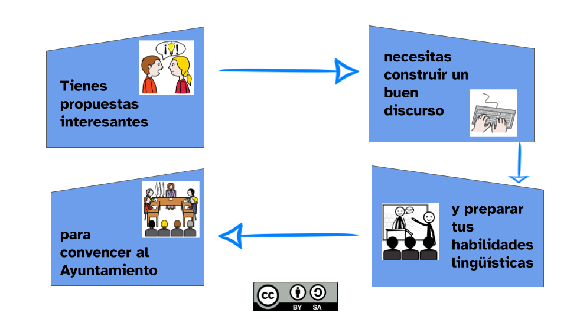
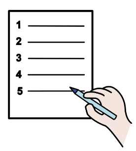

Razones para un planeta mejor
1. Un viaje en el tiempo
1. Todo depende de ti
 Hola, habitante del presente. Vengo del futuro para traerte un importante aviso: te espera un planeta catastrófico si el deterioro del medio ambiente continúa en la dirección actual. ¿Cómo? ¿Que no me crees? Si no haces nada por evitarlo, te espera algo parecido a esto:
Hola, habitante del presente. Vengo del futuro para traerte un importante aviso: te espera un planeta catastrófico si el deterioro del medio ambiente continúa en la dirección actual. ¿Cómo? ¿Que no me crees? Si no haces nada por evitarlo, te espera algo parecido a esto:
Lectura facilitada
Hola, habitante de la actualidad.
Yo vengo del futuro para darte un aviso importante:
el destino de nuestro planeta será catastrófico,
tú debes frenar el desgaste del medio ambiente.
Mira el siguiente video:
Accede al recurso video en Youtube
Pincha aquí para acceder a los subtítulos del vídeo
Pincha aquí para acceder al contenido escrito del vídeo
¡Créeme! ¡Tú debes hacer algo!
Destino

Definición:
Meta, punto de llegada
Ejemplo:
El destino de mi viaje es un pueblo de la sierra.
Apoyo visual
2. Actúa en el presente para salvar el futuro
Impactante, ¿verdad? Hay que hacer algo para evitarlo y está en tus manos conseguirlo. Te animo a que elabores en grupo una propuesta argumentada para una mejora medioambiental concreta de tu entorno más cercano (barrio o municipio) y que la hagas llegar a la Junta de distrito municipal o directamente al Ayuntamiento.
Lectura facilitada
El video te ha impactado, ¿verdad?
Tienes que hacer algo para evitar ese futuro desastroso.
Conseguir evitar la devastación depende de tí.
Te animo a que actúes.
Tu reto va a consistir en elaborar en grupo 1 propuesta
para realizar 1 mejora en tu entorno cercano
que tenga que ver con el medioambiente.
Debes argumentar la propuesta
y presentarla en la Junta de distrito municipal
o en el Ayuntamiento.
Argumentar
Definición:
Contar algo con argumentos.
Ejemplo:
A María le gusta argumentar sus razones.
Junta de distrito municipal
Definición:
Conjunto de personas que se encargan de administrar un barrio.
Ejemplo:
La Junta de distrito municipal ha aceptado nuestras propuestas de mejora sobre reciclaje.
Apoyo visual
El reto medioambiental al que nos enfrentamos es enorme y es urgente y necesario intervenir. Seguramente ya conoces por otras materias cuáles son los principales problemas medioambientales a los que nos enfrentamos como sociedad y las propuestas que hacen las grandes instituciones como la ONU o las “Cumbres del clima” para minimizar el impacto negativo de nuestra actividad sobre el medioambiente. Esas medidas, quizá, están un poco lejos de nuestro alcance. Lo que sí podemos hacer es concretar acciones que contribuyan desde nuestro entorno cercano. Es la idea del famoso lema: Piensa en global, actúa en local.
Para conseguir nuestros fines debemos ser sujetos activos y tener un buen discurso, coherente y ordenado. Vamos a explorar cada una de estas habilidades en las siguientes actividades.
Lectura facilitada
Nosotros nos enfrentamos a un reto medioambiental muy importante.
Que tú realices el reto es necesario y urgente.
Seguro que tú ya conoces
cuáles son los problemas medioambientales más importantes de nuestro planeta.
 Algunas instituciones como la ONU (Organización de las Naciones Unidas)
Algunas instituciones como la ONU (Organización de las Naciones Unidas)
hacen propuestas para que la actividad diaria
afecte lo menos posible al medioambiente.
Es difícil que tú realices las propuestas de la ONU,
pero sí puedes actuar en tu barrio.
 “Piensa en global, actúa en local” es un lema que resume la idea de actuar en tu entorno.
“Piensa en global, actúa en local” es un lema que resume la idea de actuar en tu entorno.
Para poder conseguir nuestros objetivos,
debemos saber convencer a los demás
hablando de una forma coherente y ordenada.
A continuación vamos a realizar unas actividades
Organización de las Naciones Unidas
Definición:
Organismo compuesto por todos los gobiernos del mundo para lograr la paz, la seguridad y los derechos de las personas.
Ejemplo:
La ONU tuvo una reunión para tratar los problemas medioambientales que afectan a nuestro planeta.
Audio
Apoyo visual
Kardia dice Aquí y ahora
Seguro que todo lo que estamos viendo te suena un montón. Continuamente este tema bombardea nuestros oídos: en noticias y anuncios de televisión e internet, en diferentes asignaturas del instituto, en carteles por la calle…
Estamos escuchando todo este tema desde que somos muy pequeños, pero, párate aquí y ahora y piensa: ¿le damos la importancia que merece? o ¿escuchamos sin prestar suficiente atención?
Piensa si es algo tan importante como para hacer algo pronto o crees que no es tan urgente y puede esperar.
Si quieres, puedes realizar una reflexión personal en tu cuaderno y compartirla con tu grupo clase.
Conexión sostenible
Somos sujetos activos
3. ¿Qué vas a aprender?
- Aprenderás a distinguir entre argumentos y falacias para construir un discurso bien fundamentado.
- Serás capaz de detectar diferentes sesgos cognitivos.
- Y aportarás ideas, como parte de la ciudadanía, para colaborar en la construcción de un entorno más verde y sostenible.

Lectura facilitada
- Aprenderás a argumentar tus ideas
de forma clara y correcta usando la sintaxis. - Elaborarás un texto argumentativo coherente
que exponga buenas razones - para conseguir que el planeta sea cada día mejor.
- Aprenderás a construir un buen discurso
distinguiendo entre argumentos y falacias. - Y colaborarás aportando ideas como ciudadano
para que tu entorno sea mejor.
Coherente
Definición:
Que es lógico
Ejemplo:
La joven tuvo un discurso coherente con su actitud.
Falacias
Definición:
Engaño o mentira que se esconde bajo algo.
Ejemplo:
Mi objetivo es descubrir las falacias que hay en las razones que me estás dando.
Apoyo visual
2. Propuesta en construcción
Diccionario
Contemporáneas
Definición
Que son de la misma época.
Ejemplo:
Esta noticia es contemporánea.
Problemática
Definición
Conjunto de problemas que tienen que ver con una persona o cosa.
Ejemplo:
La problemática sobre medioambiente tiene que ver con nosotros y nosotras.
1. Mentirosos compulsivos
Como habrás visto en las tareas anteriores hay mucho escrito sobre estas cuestiones y seguro que lo que te cuento no te suena a nuevo. Ya son muchas las voces contemporáneas que te están avisando de estos problemas. Hay hasta cortos de animación tan gráficos como este:
Pincha aquí para acceder a la audiodescripción del vídeo.
Pincha aquí para acceder al contenido del vídeo.
En las páginas siguientes vamos a explorar, por un lado, las causas, las razones y las posibles soluciones que se pueden aportar a la problemática que acabamos de ver en este vídeo y, por otro, practicaremos con el lenguaje y la comunicación para aprender a transmitir nuestro mensaje de la manera más eficaz desde un punto de vista lingüístico.
Buscando voy, buscando vengo...
Contemporáneas
Definición
Que son de la misma época.
Ejemplo:
Esta noticia es contemporánea.
Problemática
Definición
Conjunto de problemas que tienen que ver con una persona o cosa.
Ejemplo:
La problemática sobre medioambiente tiene que ver con nosotros y nosotras.
Lectura facilitada
Seguro que las cosas que te estoy contando
te suenan bastante.
Nosotros recibimos de forma continua muchos avisos
sobre los problemas medioambientales que existen en nuestro entorno.
Fíjate en el siguiente corto animado:
Accede al recurso video MAN en YouTube
Pincha aquí para acceder a la audiodescripción del vídeo.
Pincha aquí para acceder al contenido del vídeo.
En las páginas siguientes
1º vas a explorar: causas, razones y posibles soluciones
para mejorar nuestro medioambiente.
Y en 2º lugar, vas a practicar comunicación y lenguaje
para poder transmitir mejor el mensaje
que propongas en el reto.
Buscando voy, buscando vengo...
Causas, consecuencias, finalidad y condiciones
Audio
Apoyo visual
2.1 Buscando voy, buscando vengo…
Qué cantidad de problemas nos muestra el vídeo anterior, ¿verdad? Vamos a pararnos a reflexionar un poco sobre ellos con la siguiente actividad.
Lectura facilitada
En el video que acabas de ver,
se muestran muchos problemas.
Párate y reflexiona 1 poco
realizando las actividades
que hay a continuación.
1. Buscando causas
Vuelve a ver el vídeo y, en grupos de 4, acordad una respuesta a las preguntas que os irán apareciendo en él.
Pero antes, leed y realizad el siguiente apartado del diario de aprendizaje.
Accede al recurso video MAN en YouTube
Lectura facilitada
Acabas de ver un video.
¿Qué ha ocurrido?
¿Se te ocurren soluciones
para los problemas que han ido apareciendo en el video?
Ponte en grupo de 4 personas
y mira el video de nuevo con atención.
Lee las preguntas
y acuerda una respuesta en grupo.
Escribe cada respuesta en el lugar correspondiente.
Pero antes, lee y realiza el siguiente apartado del diario de aprendizaje.
Accede al recurso video MAN en YouTube
Apoyo visual
¿Seré capaz de hacer la actividad?
¡Ya has empezado la actividad “En busca de la fuente”! Los comienzos pueden crearte miedos e inseguridades a la hora de realizarla.
Si completas el PASO 2 del Diario de Aprendizaje (¿Seré capaz de hacerlo?) podrás ver que tus sentimientos son habituales cuando empezamos una tarea y reflexionar sobre ello te ayudará a continuar con la actividad y completarla con éxito.
Recuerda:
- Pregunta a tu profesor o profesora si la rellenarás en papel o en el ordenador.
- Si la rellenas en el ordenador, ¡no te olvides de guardarla cuando la termines!
¡Ánimo, que lo harás genial!
2. Buscando razones
A veces, no nos planteamos el porqué de nuestros actos, ni sus consecuencias sobre el entorno. Otras veces, mantenemos creencias falsas o prejuicios. Te ofrezco algunos a continuación. Léelos con tu grupo y relaciona cada afirmación con el motivo que la invalida.
Lectura facilitada
Algunas veces, actuamos en nuestro entorno
sin pensar en las consecuencias que podemos provocar.
Otras veces, tenemos prejuicios y creencias falsas
sobre situaciones que nos rodean en nuestro día a día.
Ponte en grupo de 4 personas.
Lee las oraciones que te ofrezco
y relaciona cada afirmación con 1 motivo.
Cada motivo explica
por qué la afirmación se considera inválida.
Apoyo visual
3. Buscando soluciones
A partir de las respuestas de los ejercicios anteriores, explora algunas ideas sobre proyectos que pueden mejorar el medio ambiente y acuerda con tu grupo cuál podría ser vuestra propuesta de mejora para el entorno.
Cuando tengáis una propuesta construid entre todos un texto argumentativo en el que defendais los valores positivos de la misma. Utiliza la siguiente plantilla para planificar el borrador. Luego, escribid el texto definitivo.
Lectura facilitada
Ya has realizado las actividades 1 y 2.
Ahora vas a explorar buscando ideas que ayuden a mejorar el medio ambiente.
Tú y tus compañeros y compañeras podéis reflexionar
y elegir 1 de esas ideas para mejorar vuestro entorno.
Construye en grupo después 1 texto argumentativo para defender la idea elegida.
1º haz el borrador utilizando esta plantilla
y 2º escribe el texto definitivo.
Apoyo visual
Lumen dice ¿Necesitas ayuda para elegir tu propuesta de mejora?
Estamos viendo muchas cosas y puede que te hayas hecho un lío.
Para ayudarte a que te sitúes mejor, quiero ofrecerte un enlace a una página web que contiene muchas sugerencias. Se llama: “55 ejemplos de proyectos ambientales”
Es importante para realizar el reto, que esta parte la vayas teniendo clara, así te será mucho más fácil después cuando tengas que empezar a elaborar tu proyecto en grupo.
Puedes pinchar aquí para acceder al recurso de ayuda sobre proyectos ambientales.
Respuestas originales y creativas
Para llegar a una meta, es conveniente que seas un buen o buena estratega. Es decir, tener métodos, técnicas, “trucos” para llegar antes o de forma más fácil donde tú quieres.
Ahora te voy a enseñar una estrategia, ¡aprovéchala para poder completar tu reto!
Esta estrategia se llama “respuestas originales y creativas”. Y nos va a ayudar en nuestro reto a poder proponer una argumentación adecuada pero también que llamen la atención y convenza al Ayuntamiento de tu municipio para que se haga realidad en tu entorno. Para ello, debemos ofrecer información diferente y exponerla de una forma creativa, nuestra misión también es despertar el interés para que nos presten mayor atención y nuestra propuesta sea la que destaque del resto.
Para poner en práctica esta estrategia, te voy a ofrecer 2 problemas que afectan al medioambiente y tienes que proponer 2 soluciones creativas, ¿te atreves?. Escríbelas en tu cuaderno cuando las tengas.
- Tu abuelo piensa que si usa en su casa bombillas incandescentes, ve mejor. ¿Cómo podrías convencerlo para que haga un cambio en el uso de las bombillas? Piensa 1 solución y arguméntala de forma creativa para que te haga caso.
- Tu prima de 3 años ha descubierto las luces en casa y ahora llega a los interruptores para encender las lámparas. Aprovecha cualquier momento para encender y apagar las luces. ¿Cómo podrías convencerla para que deje de hacerlo? Piensa 1 solución y arguméntala de forma original para captar su atención y que te obedezca.
Pincha aquí para acceder a la página de la guía del alumno donde se explica cómo dar “respuestas originales y creativas”
¡Ánimo, confío en tí!
Opción A: a debate
Responde a esta pregunta con razones a favor y en contra: “¿Son compatibles desarrollo y sostenibilidad?”.
Motus dice Hablando sobre otro tipo de ambiente
En esta fase hemos empezado fuerte. Hasta el momento, hemos realizado 3 tareas en grupo. ¿Cómo te has sentido trabajando con tu equipo? ¿Qué ambiente se respira entre vosotros y vosotras?
Seguro que todo marcha genial. Recuerda que cuando trabajamos en grupo, nos ayudamos unos a otros y experimentamos otros tipos de aprendizajes, pero cada uno debe poner de su parte y colaborar lo máximo posible.
Si experimentas algún problema, no dudes en comentárselo a tu profesor o profesora. Estará encantado de poder ayudarte. ¡Seguimos!
3. Quien busca, encuentra
Diccionario
Organismo oficial
Definición:
Institución encargada de realizar una función concreta en la sociedad, puede ser política, económica, jurídica, educativa...
Ejemplo:
El Estado es el organismo oficial más importante.
Tus propuestas son muy interesantes, pero defenderlas ante un Ayuntamiento con solidez requiere manejar las herramientas que el lenguaje nos ofrece para construir un buen discurso. Vamos a prepararnos juntos para ello practicando las habilidades lingüísticas que encontrarás en las siguientes páginas.
Lectura facilitada
Las propuestas que tú tienes son muy interesantes.
Pero tú necesitas utilizar de forma adecuada el lenguaje
para poder elaborar 1 discurso firme y bueno
para convencer al Ayuntamiento.
Prepara tus habilidades lingüísticas
practicando en las actividades de las páginas siguientes.
Discurso
Definición:
Escrito o exposición sobre un tema determinado.
Ejemplo:
Escribí un discurso sobre la paz en el mundo.
Firme

Definición:
Que sus razonamientos son fuertes.
Ejemplo:
Mi hija me dio unos argumentos firmes sobre lo que había ocurrido.
Imagen original: Atribución imagen.
Apoyo visual

3.1 Ecoargumentación
Para elaborar un discurso que defienda tu propuesta ante un organismo oficial, todas las razones (causas, consecuencias, condiciones…) hay que organizarlas en un texto coherente. Para formar textos argumentativos tienes que conocer su estructura y manejar los argumentos que se reconocen como válidos por la comunidad científica internacional.
Organismo oficial
Definición:
Institución encargada de realizar una función concreta en la sociedad, puede ser política, económica, jurídica, educativa...
Ejemplo:
El Estado es el organismo oficial más importante.
Lectura facilitada
Si tú tienes 1 propuesta y tú quieres defenderla,
tú tienes que organizar 1 texto
que recoja de forma ordenada
todas las razones que justifican la propuesta.
Tú debes elaborar 1 discurso.
1 discurso se elabora con 1 texto argumentativo.
Por esa razón, tú debes conocer la estructura
y los argumentos válidos
que se utilizan para elaborar textos argumentativos.
Apoyo visual
1. ¿Antes o después?
Observa el siguiente vídeo.
Pincha aquí para descargar el contenido del vídeo
Imagina un contexto y unos destinatarios para la siguiente tesis y los argumentos que se proponen. ¿Qué estructura elegirías como la más apropiada para cumplir tu intención? Acuerda la estructura con tu equipo y redacta el texto siguiendo la técnica del folio giratorio.
Tesis
Tesis: siempre que sea posible debemos usar el transporte público o ir andando o en bici
Argumento 1
Argumento 1: el transporte público ayuda a la reducción de la contaminación en las ciudades
Argumento 2
Argumento 2: andar o desplazarse en bici es bueno para la salud
Argumento 3
Argumento 3: las ciudades con menos vehículos motorizados son más agradables
Lectura facilitada
Observa el siguiente video.
Pincha aquí para descargar los subtítulos del vídeo
Pincha aquí para descargar el contenido del vídeo
A continuación te doy 1 tesis
y te propongo 3 argumentos.
Debes utilizar los 3 argumentos que te ofrezco.
Tú tienes que aportar 1 contexto
e imaginar unos destinatarios.
Además tú tienes que elegir
junto a tus compañeros y compañeras
la estructura más adecuada.
Después vas a redactar el texto en grupo
utilizando la técnica del folio giratorio.
Tesis
Tesis: siempre que sea posible debemos usar el transporte público o ir andando o en bici
Argumento 1
Argumento 1: el transporte público ayuda a la reducción de la contaminación en las ciudades
Argumento 2
Argumento 2: andar o desplazarse en bici es bueno para la salud
Argumento 3
Argumento 3: las ciudades con menos vehículos motorizados son más agradables
Tesis
Definición:
Opinión que se mantiene y se intenta demostrar con razonamientos.
Ejemplo:
La tesis de Antonio fue bien recibida y se llevó a cabo su propuesta.
Contexto

Definición:
Espacio o ambiente en el que se desarrolla algo.
Ejemplo:
La mejora medioambiental tendrá lugar en un contexto próximo a nuestro barrio.
Destinatarios
Definición:
Persona o cosa a la que se le destina algo
Ejemplo:
La persona destinataria de aquel sobre era mi amiga Lara.
Apoyo visual
Lumen dice ¿Necesitas ayuda para llevar a cabo la técnica del folio giratorio?
Quizá ya has usado la técnica cooperativa del folio giratorio. O puede que la hayas puesto en práctica alguna vez y ya no te acuerdas.
Pues bien, yo te ofrezco un enlace para que puedas consultar en qué consiste esta técnica de trabajo en grupo. ¡Vamos equipo!
Pincha aquí para acceder a la guía del alumno donde se explica en qué consiste la técnica cooperativa de “folio giratorio”.
2. Argumentos, sí; falacias, no
Ya hemos visto que todo texto argumentativo plantea varias razones para defender la tesis, pero no vale todo. A veces, las razones no son sólidas o no están bien fundamentadas. Es lo que se conoce como falacias. Presta atención a la siguiente presentación donde se explica muy bien.
Accede aquí al recurso Presentación
Ahora que ya sabes qué es un argumento y una falacia, ¿serías capaz de distinguirlos? Vamos a probar con un juego: el “Memory de las razones”
Lectura facilitada
Todos los textos argumentativos tienen varias razones
para defender la tesis.
A veces, hay razones que no son válidas.
A estas razones les faltan explicaciones
que justifiquen que son verdaderas.
Se les llama falacias a este tipo de razones inválidas.
Mira con atención la siguiente presentación.
Ya sabes lo que es 1 argumento y 1 falacia.
¿Eres capaz de distinguir argumentos y falacias?
Ponte a prueba con el siguiente juego:
Apoyo visual
Lumen dice ¿Quieres saber más sobre falacias?
¿Qué te ha parecido esta parte de argumentación? Curioso, ¿verdad?
Si te ha resultado interesante, te ofrezco el siguiente enlace para que sigas aprendiendo sobre argumentos y falacias. En este caso, se desmontan falacias que tienen que ver con el cambio climático, justo una de las temáticas que estamos trabajando del medio ambiente. Esa información te puede venir muy bien para ayudarte a elaborar los argumentos que tú y tus compañeros y compañeras necesitaréis en el reto.
Pincha aquí para acceder al recurso de consulta: “desmontando falacias”
Kardia dice ¿Eres o has sido falaz?
Puestos en este punto y con toda la información que acabas de recibir, en muchos de los ejemplos que hemos visto en las presentaciones de contenido, seguramente te has visto reflejado.
Tenemos mucha tendencia a emplear falacias en nuestro día a día y muchas veces no somos conscientes de ello. Queremos convencer a los demás de algo a toda costa, sin pensar en los argumentos que estamos utilizando ni en las consecuencias de ello. Somos más falaces de lo que creemos. Por eso, debemos tomar conciencia y aprender a realizar justificaciones o argumentaciones que sean apropiadas y válidas. Aprovecha este aprendizaje y entrénate para aplicarlo después en tu vida cotidiana. ¡Vamos, tú puedes!
3. Argumenta tú
Es momento de ponerte a prueba manejando argumentos para construir textos argumentativos bien estructurados. A continuación, te dejamos varias opciones para que elijas los ejercicios que más se adapten a ti.
Opción A: ¿verdadero o falso?
Indica si las siguientes afirmaciones son V o F:
Retroalimentación
Verdadero
Retroalimentación
Falso
Retroalimentación
Falso
Retroalimentación
Verdadero
Retroalimentación
Falso
Retroalimentación
Falso
Retroalimentación
Verdadero
Opción B: ¿de qué hablamos?
Indica el concepto que corresponde a cada definición:
Opción C: mueve la tesis
Construye la estructura adecuada moviendo los siguientes elementos a su posición correcta:
Opción D: antes y después
Completa en tu cuaderno la siguiente afirmación: “Antes pensaba que los argumentos eran… y ahora pienso que… A partir de ahora, cuando tenga que construir un texto argumentativo, sabré que debo utilizar una estructura…”
Motus dice ¿Cómo vas, argumentador?
¿Cómo te sientes en este momento?¿Va todo bien?
Esta parte que estamos trabajando es la más pesada, pero es clave para que puedas elaborar tu reto de forma adecuada. Haz un esfuerzo y presta atención a todo lo que estás trabajando, te será muy útil en este recorrido. Acuérdate de tomar notas o esquematizar los contenidos más importantes y comparte todo lo que elabores con tus compañeros y compañeras de equipo. Juntos es más fácil trabajar y llegar a la meta. ¡Ánimo!
3.2 Ecosesgos
Para comprender cómo nuestras decisiones y juicios pueden estar influenciados de manera inconsciente, contamos con una serie de conceptos clave que nos serán de gran ayuda. En la siguiente presentación, te ofrecemos un resumen de los sesgos cognitivos más comunes y cómo pueden afectar nuestra percepción de la realidad.
Lectura facilitada
Tú puedes construir oraciones
utilizando el lenguaje
para expresar las razones
que justifiquen tu propuesta.
Lee con atención la presentación que te ofrezco.
Tú puedes encontrar en la presentación
1 resumen de las palabras más comunes
que se utilizan cuando tú quieres expresar:
- causa
- consecuencia
- condición
- o finalidad
Apoyo visual
1. Reconoce los sesgos
Es momento de ponerte a prueba manejando los sesgos que hemos practicado. A continuación, te dejamos varias opciones para que elijas los ejercicios que mejor se adapten a tus inclinaciones.
Opción A: organiza lo aprendido
Repasa la presentación sobre sesgos cognitivos que abre esta página y vincula el sesgo con la frase correcta.
Opción B: crea ejemplos de ecosesgos
Mira los sesgos de la presentación inicial de esta página y escribe un ejemplo ecológico vinculado a cada uno.
Opción C: seleccionar el sesgo cognitivo
Solución
Solución
Solución
Solución
Reviso lo que aprendo
Reflexiona un momento sobre todo lo que has aprendido hasta llegar aquí. Y completa el PASO 1 de tu Diario de Aprendizaje (Reviso lo aprendido)
Recuerda:
- Pregunta a tu profesor o profesora si la rellenarás en papel o en el ordenador.
- Si la rellenas en el ordenador, ¡no te olvides de guardarla cuando la termines!
¡Ánimo, que lo harás genial!
Motus dice ¿Cómo vas hasta ahora?
Ya hemos terminado esta parte sobre lingüística. ¿Cómo te has sentido trabajando? ¿Te ha gustado lo que has aprendido?
Espero que hayas disfrutado de este aprendizaje tan enriquecedor que te será muy útil en el desarrollo del reto.
Ahora queda que te pongas manos a la obra, junto a tus compañeros y compañeras, para comenzar a aplicar todo lo que habéis aprendido. Seguro que será muy divertido y emocionante.
Recuerda que uno de los objetivos consiste en colaborar en tu entorno cercano aportando ideas, y eso, es muy importante. Tómatelo en serio y haz tu mejor propuesta. ¡Adelante, el planeta confía en tus capacidades lingüísticas para conseguirlo!
4. Esta es mi propuesta
Ha llegado el momento de dar forma a la propuesta definitiva de tu grupo para mejorar vuestro pueblo o ciudad. Ahora verás cómo presentarla teniendo en cuenta todo lo que has aprendido en este REA.

Lectura facilitada
Ahora es tú momento.
Ya puedes desarrollar tu propuesta final
sobre la mejora medioambiental de tu entorno.

Tú tienes que pensar
cómo vas a presentar la propuesta
aplicando todos los aprendizajes
que tienes hasta ahora.
Apoyo visual
1. Un proyecto para el cambio
Reúnete con tu grupo y concreta por escrito o en otro formato (ilustración, infografía, vídeo, presentación…) tu propuesta siguiendo este guion:
- Título del proyecto.
- Descripción del problema medioambiental al que se pretende dar solución.
- Detalle de la propuesta de actuación.
- Recursos necesarios.
- Opcional: anexos o documentación adjunta (planos, prototipo…etc.)
Lectura facilitada
Para realizar esta actividad,
únete a tu equipo de 4 personas
y concreta la propuesta
junto a tus compañeros y compañeras
siguiendo el guion
que te indico a continuación:.

1. Título del proyecto.
2. Descripción del problema medioambiental
al que se pretende dar solución.
3. Detalle de la propuesta de actuación.
4. Recursos necesarios.
5. Anexos: documentación adjunta
- planos
- prototipo
- presentación
- vídeo
- y muchos más
Puedes realizar esta actividad por escrito
o utilizando otro formato:
- ilustración
- infografía
- vídeo
- presentación
- o cualquier otro
Apoyo visual
2. Con toda la razón
Redacta con tu grupo un texto argumentativo que justifique por qué esta mejora es necesaria y debe ser tenida en cuenta. Recuerda: apóyate en las estructuras sintácticas que has aprendido, utiliza buenos argumentos y evita las falacias.
Si aún tienes dudas, puedes comprobar que cumples los requisitos necesarios con esta lista de cotejo.

Puedes descargar la ficha y rellenarla. Acuérdate de guardarla cuando acabes. También puedes imprimirla y rellenarla en papel.
Lectura facilitada
Sigue en grupo de 4 personas.
1 vez que has elaborado tu guion de equipo
te toca redactar en grupo 1 texto argumentativo.
El texto que vas a redactar
debe explicar por qué es necesaria la mejora
que has elegido con tus compañeros y compañeras.
Para dar las razones en el texto,
utiliza las estructuras sintácticas
que has aprendido.
Evita utilizar falacias
y construye argumentos válidos.
Verifica tu texto argumentativo
realizando la siguiente lista de cotejo.
Audio
Apoyo visual
¿Qué he aprendido?
En este último paso te voy a proponer que pienses qué ha sido lo más importante de todo lo que has aprendido para conseguir el reto que te proponíamos.
Lo que descubras pensando en ello te servirá para cuando tengas que alcanzar retos parecidos en un futuro.
¡Para un momento y completa el PASO 4 de tu Diario de Aprendizaje (¿Qué he aprendido?)!
Recuerda:
- Pregunta a tu profesor o profesora si la rellenarás en papel o en el ordenador.
- Si la rellenas en el ordenador, ¡no te olvides de guardarla cuando la termines!
¡Ánimo, que lo harás genial!
3. Lo presentamos
Es momento de presentar al resto de los compañeros y compañeras de clase vuestro proyecto. Comprobad la calidad de vuestra propuesta y su argumentación con esta rúbrica de evaluación.
Lectura facilitada
Ha llegado el momento
de que presentes en grupo
a tus compañeros y compañeras de clase
el proyecto que has realizado.
 Utiliza la rúbrica de evaluación
Utiliza la rúbrica de evaluación
para comprobar el nivel de calidad
de tu proyecto medioambiental.
Apoyo visual
Motus dice ¿Has confiado en tus capacidades?
Ya has llegado hasta aquí y eso tiene un gran valor.
¿Te has sentido confiado al realizar el reto?
Cuando tenemos que hacer alguna actividad podemos tener dudas sobre si seremos capaces de hacerlo.
Para poder vencer a estos miedos, en los nuevos retos y actividades que tengas que hacer, puedes seguir estos consejos:
- Hay cosas que haces muy bien. Úsalas para hacer la actividad que se te presente.
- Hay cosas que te cuestan un poco hacerlas. Inténtalo y cree en tí mismo o en tí misma. Seguro que te sorprende lo que puedes conseguir.
- Hay cosas que son muy difíciles. Fíjate en algún ejemplo, pregunta a tu compañero o compañera o pide ayuda a tu profe. Lo difícil también se puede realizar con ayuda. ¡No tienes de qué preocuparte!
Créditos
Autoría

Este contenido fue creado por Horacio Muñoz Fernández con eXeLearning, el editor libre y de fuente abierta diseñado para crear recursos educativos, modificando el siguiente REA.
| Título | Razones para un planeta mejor |
|---|---|
| Descripción |
A través del tema del cambio climático, se acercará a los alumnos a una revisión sobre los usos lingüísticos con reflexión metalingüística, formulando generalidades sobre el funcionamiento de la lengua a nivel morfológico y sintáctico. Producto final: crear un texto argumentativo para defender una propuesta de actuación medioambiental ante el Ayuntamiento o Junta de distrito municipal. |
| Persona elaboradora de contenido | Carmen López Hernández |
| Persona elaboradora de contenido | Alejandro Salgado Martínez |
| Persona elaboradora de contenido | Noelia Rey Romero |
| Persona elaboradora de contenido | Teresa Romero Fortes |
| Persona de soporte técnico | José de la Torre López |
| Persona coordinadora del ciclo | Ángela García-Rowe López |
| Persona coordinadora de la materia | Eloy Alberto Caballero Navarro |
| Organización | Dirección General de Formación del Profesorado e Innovación Educativa. Consejería de Educación y Deporte. Junta de Andalucía. |
| Licencia | Licencia Creative Commons Reconocimiento No comercial Compartir igual 4.0 |

Historial de versiones
| Elaborado por: |
Servicio de Innovación Educativa de la Consejería de Educación de la Junta de Andalucía. |
|||
| Versión: | 01 | Fecha de publicación: |
15/06/2022 | Primera versión |
|---|---|---|---|---|
| Versión: | 02 | Fecha de publicación: | 02/03/2025 | Versión modificada |
Aquí tienes el archivo fuente para editar este REA

- Este REA se ha publicado bajo Licencia Creative Commons Reconocimiento No comercial Compartir igual 4.0
- Esto significa que tienes la posibilidad de poder usarlo, descargarlo, redistribuirlo y modificarlo para adaptarlo a tus necesidades.
- Sigue estos pasos para usar/redistribuir/modificar este REA:
1. Descarga el archivo fuente. Con esto tienes el recurso original en formato editable.
2. Modifícalo usando eXeLearning.
3. Si aun no lo tienes, descarga e instala el estilo EducaAnd.
4. Si lo modificas, has de reconocer la autoría y publicarlo con la misma licencia (CC BY-SA-NC).
Puedes usar esta cita para referenciarlo:
Este REA es una adaptación del recurso original "Crea tu REA con calidad: guía para personas elaboradoras" del Proyecto REA Andalucía de la Consejería de Educación y Deporte de la Junta de Andalucía, que lo distribuye bajo licencia de CC BY-SA-NC.
Página 1
Página 2

{kind=link}
{kind=link}
{kind=link}
{kind=link}
Página 3
Página 4
{kind=link}
Infografía realizada con Chatgpt
Página 5
Página 7
Obra publicada con Licencia Creative Commons Reconocimiento No comercial Compartir igual 4.0